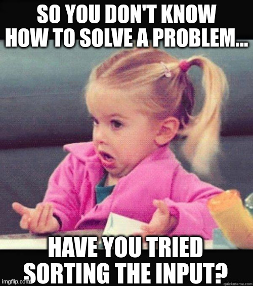

Main learning outcomes for this class
- Sorting:
- I know how to sort using the libraries of my language (wether they are numbers or more complicated structures) and I know the complexity of those sorting algorithms.
- I know some non comparative sorting algorithms such as counting sort and radix sort that allow one to sort in time better than \(\mathcal{O}(n \log n)\).
- Binary Search and variants:
- I know what binary search is and its complexity.
- I know how to call binary search using the libraries of my language.
- I know how to manually implement binary search.
- I understand the concept of binary search the answer.
- I understand the concept of bisection.
- I understand the concept of ternary search.
Study Material
I want my memes!
😁 don't know what to do?

😁 log solution
😁 so much binary search...
😁 swiss knife
Pedro Ribeiro - DCC/FCUP | Last update: